Hwang-Hak
Village
A photographic study of Hwang-Hak Village and its everyday market.
- Title
- Hwang-Hak Village
- Format
- Archival pigment prints
- Year
- 2014
- Images
- 16 photographs
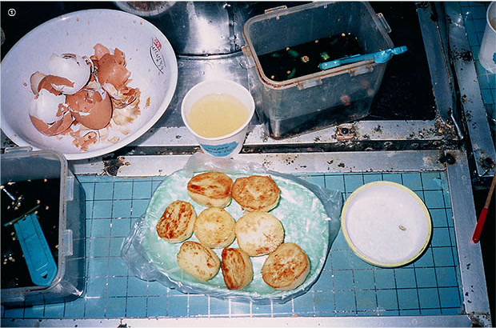
I was born in 1988. I sometimes bring up my curiosity towards the world before I was born. I could feel the flames in my heart when I first saw this village, because I had never seen those unique sentiments and sceneries in my life.
Was it because the village was located in the centre of Seoul that incredibly grew up? The village remained underdeveloped. In some ways, its contradictory features were really appealing to me.
Village people did rough work and small economic activities on weekdays and held a marketplace on weekends. I called this village a treasure house. Would there be any place in the heart of Seoul more interesting than this village?
It seemed no young people lived here. I thought this place was like a playground for people who reminisced about good old memories. A young man sneaked into their quiet and private playground.
I captured it through my own styles.
Everyday of the Market
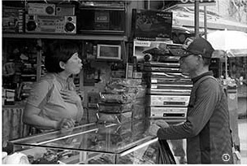
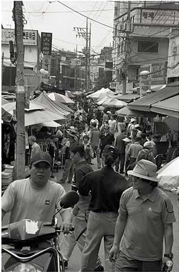
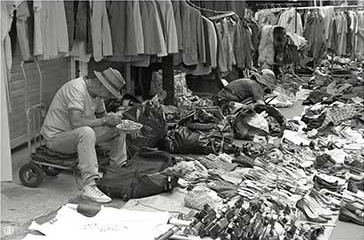
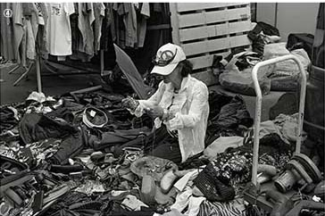
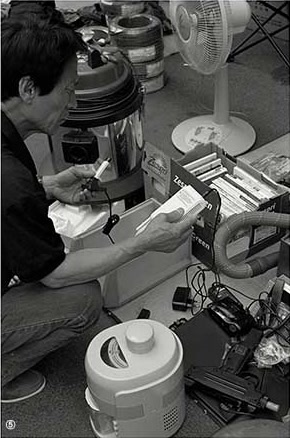
Everything is here, including old electronic devices, books, clothes, and more. This is a place for things that have reached the end of their life.
They wait for second owners, who are normally village seniors.
Encounters
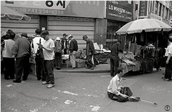
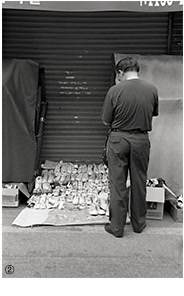
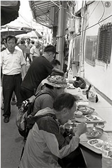
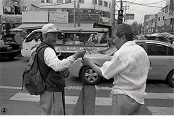
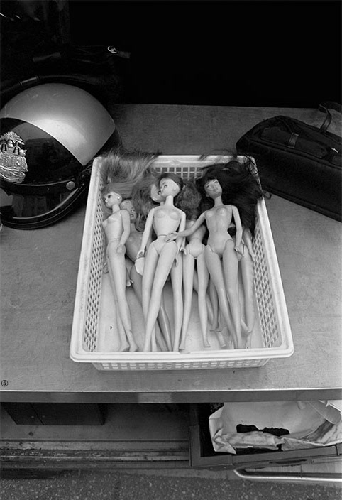
Market Fragments
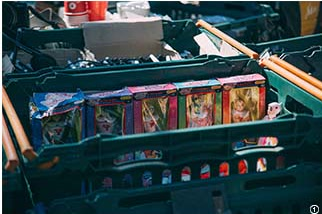
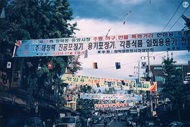
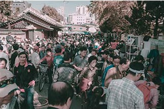
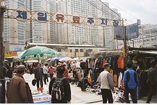
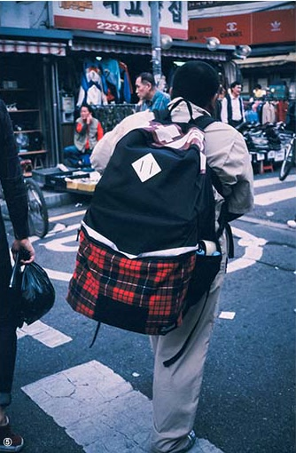
“I wondered what was inside the bag. It was so large.”